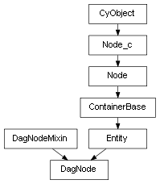

class cymel.core.cyobjects.dagnode.DagNode¶

- class cymel.core.cyobjects.dagnode.DagNode(*args, **kwargs)¶
Bases:
DagNodeMixin,EntitydagNode Node type wrapper class.
Supports node generation when creating a class instance without fixed arguments.
Methods:
commonAncestor(other[, skipFirst])Gets the common ancestor node of the specified node.
findCommonAncestor([nodes, skipFirst])Find common ancestor nodes of the specified DAG node.
hide()Set visibility attribute to False.
iterBreadthFirst([shapes, intermediates, ...])Breadth-first iterates through the DAG node tree.
iterDepthFirst([shapes, intermediates, ...])Depth-first iterates through the DAG node tree.
iterPath([end, includeStart, includeEnd, ...])Iterator that follows the DAG path.
setParent([parent, r, add, avoidJointShear, ...])Change parent node.
show()Set visibility attribute to True.
Attributes:
- TYPE_BITS = 1¶
Represents the characteristics of nodes supported by the class.
Method Details:
- commonAncestor(other, skipFirst=False)¶
Gets the common ancestor node of the specified node.
Equivalent to calling
findCommonAncestorwith [self, other].
- static findCommonAncestor(nodes=None, skipFirst=False)¶
Find common ancestor nodes of the specified DAG node.
- hide()¶
Set visibility attribute to False.
- iterBreadthFirst(shapes=False, intermediates=False, underWorld=False)¶
Breadth-first iterates through the DAG node tree.
- iterDepthFirst(shapes=False, intermediates=False, underWorld=False)¶
Depth-first iterates through the DAG node tree.
- iterPath(end=None, includeStart=True, includeEnd=True, includeTurn=False)¶
Iterator that follows the DAG path.
- Parameters:
end – DAG node to end at. If omitted, iterates up to the root.
includeStart (int) – Whether to include the starting node. If only ascending (the start point is a descendant of the end point), includeTurn must also be True.
includeEnd (int) – Whether to include the end node. If only descending (the start point is an ancestor of the end point), includeTurn must also be True. If the end point is omitted, this specification is ignored, and the highest node on the scene is always included.
includeTurn (bool) – Whether to include the turning point from rise to fall. The wrapping point is the topmost node in the iteration, the common ancestor of the start and end points, similar to what you can get with
commonAncestor. The starting point when only descending (the starting point is an ancestor of the ending point) and the ending point when only ascending (the starting point is a descendant of the ending point) are treated as both the starting point and the ending point, as well as the turning point. They will only be retrieved if includeStart or includeEnd and includeTurn are also True.
- Returns:
yield (
DagNode,int) The integer value takes on the next value and indicates the direction being followed. * 0 - descending. * 1 - Rise. * 2 - Turnaround point from rise to fall (highest point in the iteration).
Note
To obtain the local matrix array of the start node in the end node space, use the default settings and refer to inverseMatrix if the returned integer value is 0, and matrix if it is 1.
- setParent(parent=None, r=False, add=False, avoidJointShear=False, unmaintainIS=False)¶
Change parent node.
- Parameters:
parent – Parent
Transformor name. If omitted, the parent will be canceled.r (bool) – Whether to keep the current local transformation. By default it is maintained in world space.
add (bool) – Add path instead of move (instance).
avoidJointShear (bool) – If this node is a joint and requires shear to maintain world pose, a transform will be added to avoid its use. This is the original behavior of Maya, but the default of this method is to use the shear of the joint and not add a transform.
unmaintainIS (bool) – If this node is a joint, inverseScale connection/disconnection is not maintained.
Warning
In all 2019 and 2020.0, joint shear does not work, so the posture may not be maintained unless avoidJointShear=True is specified. This issue has been fixed as a bug since 2020.1.
- show()¶
Set visibility attribute to True.